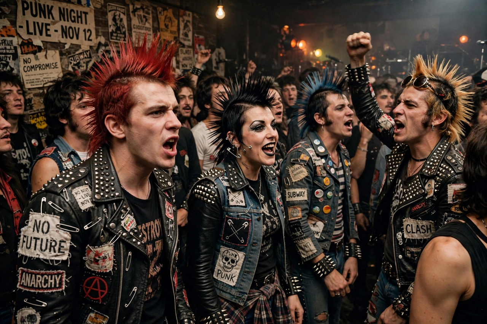

From Wikipedia, the free encyclopedia

| Punk subculture | |
|---|---|
| Years active | Mid-1970s–present |
| Location | United Kingdom, United States, worldwide |
| Key elements | Punk rock, DIY ethic, anti-establishment politics, distinctive fashion |
| Influences | Garage rock, glam rock, pub rock, Dada, Situationism |
| Offshoots | Hardcore punk, anarcho-punk, crust punk, riot grrrl, straight edge |
The punk subculture is a subculture centred on punk rock music and a distinctive style of dress, hairstyle, and ideology that emerged in the mid-1970s in the United States, the United Kingdom, and Australia. Punk is characterised by a do-it-yourself (DIY) ethic, anti-authoritarian and anti-establishment attitudes, and a rejection of mainstream commercial culture. The subculture gave rise to a wide variety of affiliated movements and scenes, from hardcore punk and anarcho-punk to the feminist riot grrrl movement of the 1990s.
Punk's roots lie in the garage rock of the 1960s and in proto-punk bands such as the Stooges, MC5, and the New York Dolls. By 1975–76, a recognisable punk scene had formed around clubs such as CBGB in New York City, where the Ramones, Television, Patti Smith, and Blondie performed. In London, manager Malcolm McLaren and designer Vivienne Westwood channelled the style through their King's Road boutique SEX, and the Sex Pistols became the movement's most notorious band after their formation in 1975.
The years 1976–77 saw punk explode into public consciousness in Britain, fuelled by economic stagnation, youth unemployment, and provocative media coverage — most famously the Sex Pistols' profanity-laced appearance on the Today television programme in December 1976. Bands such as The Clash, The Damned, Siouxsie and the Banshees, and the Buzzcocks defined the first wave. As the decade ended, punk fragmented into post-punk, new wave, and the faster, more aggressive hardcore sound pioneered in the United States by bands such as Black Flag, Minor Threat, and Dead Kennedys.
In the 1990s, punk-derived pop-punk and skate punk achieved mainstream success through bands like Green Day and The Offspring, while the riot grrrl movement — associated with Bikini Kill and the Olympia, Washington scene — fused punk with feminist politics. Punk scenes continue worldwide, often centred on independent venues, squats, and self-organised festivals.
Punk rock is typically fast, loud, and stripped-down, with short songs, simple chord progressions (often three chords), shouted or sneered vocals, and deliberately raw production. Lyrics frequently address politics, alienation, boredom, and social criticism. The genre's accessibility was central to its ethos: technical virtuosity was distrusted, and the barrier to forming a band was intentionally low. A famous illustration in the fanzine Sideburns (1977) showed three chord diagrams with the caption: "This is a chord. This is another. This is a third. Now form a band."
Punk ideology is commonly associated with anti-authoritarianism, anti-consumerism, anti-corporatism, and non-conformity. Many punks identify with left-wing or anarchist politics; the anarcho-punk movement, led by bands such as Crass, explicitly promoted anarchism, animal rights, and pacifism. Other strands — including street punk and Oi! — emphasised working-class identity. Not all punks are political, however, and the subculture has contained competing and sometimes hostile factions, including apolitical and, controversially, far-right elements that the majority of the scene has historically opposed, notably through initiatives such as Rock Against Racism (1976–79).
Punk fashion deliberately courts shock and offence: torn and safety-pinned clothing, bondage trousers, leather jackets covered in studs and band logos, Dr. Martens boots, and spiked or brightly dyed hair, including the mohawk. Early London punk style was shaped by Vivienne Westwood and Malcolm McLaren's designs, which used fetish wear, tartan, and provocative imagery. Later scenes adapted the look: hardcore favoured plain T-shirts, jeans, and shaved heads for practicality in the mosh pit, while crust punk emphasised patched, unwashed clothing as a rejection of consumerism. DIY customisation — hand-painted jackets, homemade patches, and badges — remains central.
Because mainstream outlets initially ignored or reviled punk, the subculture built its own infrastructure: independent record labels (such as Rough Trade, SST Records, and Dischord Records), self-released singles, photocopied fanzines (such as Sniffin' Glue), all-ages shows in rented halls, and later, distros and the internet. The DIY ethic — that anyone can make music, publish, or organise without permission — is widely regarded as punk's most durable legacy, influencing indie rock, zine culture, and open-source and maker movements.